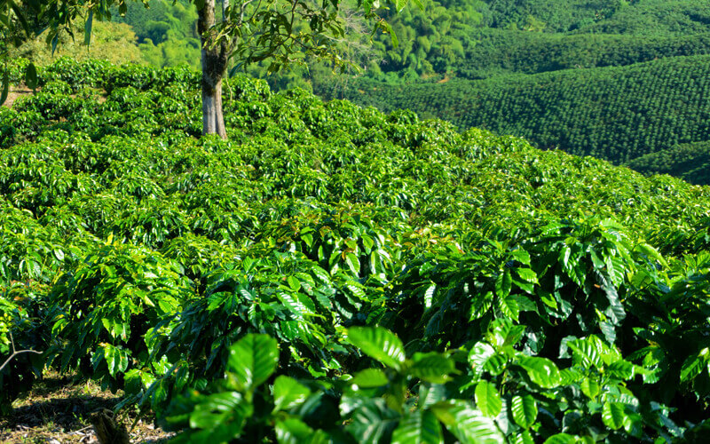
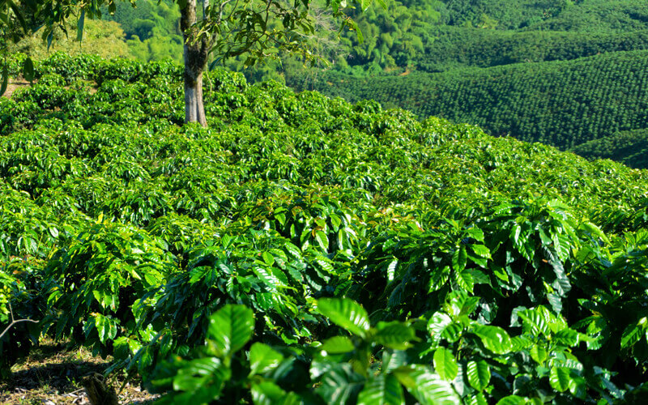

Types of Coffees
 Espresso
Espresso
Espresso is a concentrated form of coffee that originated in Italy. It is made by forcing hot water under high pressure through finely ground coffee beans. The result is a small, concentrated shot of coffee with a rich and intense flavor. Espresso is characterized by its bold and robust taste.
Latte is a popular coffee drink that originated in Italy. It consists of a shot of espresso mixed with steamed milk, topped with a layer of milk foam. The steamed milk adds a creamy texture and mellows the strong flavor of espresso, resulting in a balanced and smooth taste.
 Americano
Americano
The Americano is a popular coffee drink that originated in the United States. It is made by diluting a shot or two of espresso with hot water, resulting in a larger and milder cup of coffee compared to espresso. The addition of hot water helps to balance the intensity of the espresso.
Cappuccino is an Italian coffee beverage that originated in Italy. It is made by combining equal parts of espresso, steamed milk, and milk foam. The espresso provides a strong and rich flavor, while the steamed milk adds a velvety texture, and the milk foam creates a frothy and light topping.
Macchiato is an Italian coffee drink that translates to "stained" or "marked." It is typically made by adding a small amount of foamed milk or steamed milk to a shot of espresso. The milk "stains" or "marks" the espresso, creating a layered, balanced flavor profile, and macchiatos can be enjoyed in different variations.
Mocha, also known as a Mochaccino, is a coffee drink that combines espresso, steamed milk, and chocolate. It originated in Yemen, where Mocha coffee beans were first cultivated. The combination of rich espresso, creamy milk, and the indulgent flavor of chocolate creates a delightful and decadent beverage.
 Turkish Coffee
Turkish Coffee
urkish coffee is a traditional method of preparing and enjoying coffee that has been practiced for centuries in Turkey and other parts of the Middle East and Balkans. It is made by finely grinding coffee beans into a powder-like consistency and then boiling it in a special pot called a cezve. The coffee is typically prepared with sugar and served unfiltered.
Irish Coffee is a classic cocktail that combines hot coffee, Irish whiskey, sugar, and topped with a layer of whipped cream. It originated in Ireland and is often served in a glass mug to showcase its layers.The warmth of the coffee, the smoothness of the whiskey, and the sweetness of the whipped cream create a delightful blend of flavors.
Ethiopian coffee holds a special place in the world of coffee as Ethiopia is considered the birthplace of coffee itself. Ethiopian coffee is known for its exceptional quality, diverse flavors, and distinctively fruity and floral notes. It is often grown at high altitudes and hand-picked, then roasted to perfection, resulting in a rich and aromatic cup of coffee.
 Greek Frappé
Greek Frappé
Greek Frappé is a popular iced coffee beverage that originated in Greece. It is made by mixing instant coffee, sugar, and water, and then shaking or blending it until it becomes frothy. The mixture is then poured over ice cubes and served with a straw. Greek Frappé is a refreshing and invigorating drink, and perfect for hot summer days.
The Flat White is a coffee drink that originated in Australia and New Zealand, although its exact origins are a subject of debate. It is made by pouring a double shot of espresso over steamed milk, creating a velvety and creamy texture. Unlike a cappuccino or latte, the milk in a Flat White is micro-textured, resulting in a smoother and less foamy consistency.
 Barako Coffee
Barako Coffee
Barako coffee is a type of coffee that is indigenous to the Philippines, particularly grown in the provinces of Batangas and Cavite. It is known for its strong and bold flavor profile, with earthy and nutty undertones. Barako coffee is typically made from Liberica coffee beans, which are larger in size compared to other coffee varieties.
 
